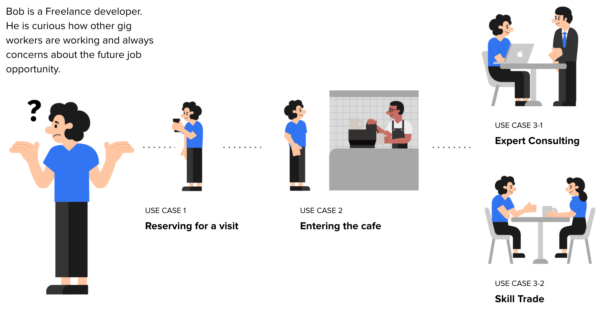
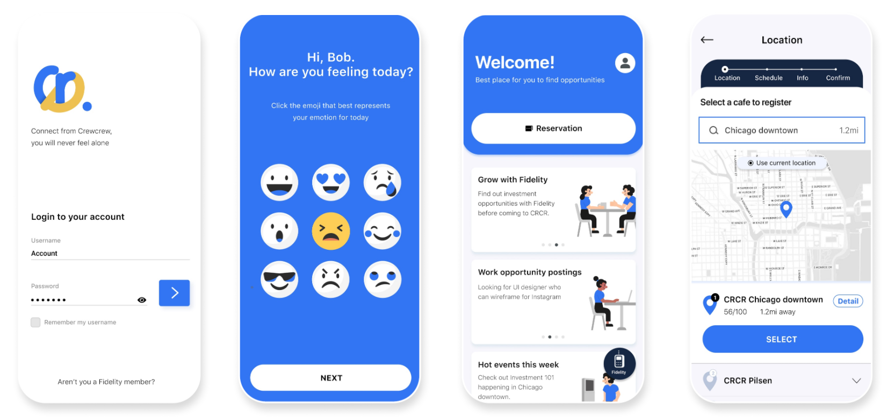

Fidelity Crewcrew Cafe
Project Type Team Project
Research Methods literature review, Interview, Case study, Usability test
Tools Illustrator, figma, miro

Working in the gig economy is a decision made in the effort to have more freedom, yet it is often met with many complex and time-consuming tasks.

Process
Fidelity Investments wants to create an experience model to build trust amongst the self-employed individuals, so-called indy workers. Our group decided to build a community space to reinforce the sense of belonging and provide support for the job of jobs. in the indy community by using the assets that Fidelity already can do the best.
Throughout the class, we started from defining What “is” the current problem by conducting user tests and secondary researches, then distilled the findings into the model of what “is” by making a journey map, then we suggested the model of what “could be” from the insights by making user flows and use cases, then we ran usability test, manifested our use cases by as What “could be” the potential solution for the future.

First, We decided to provide lots of physical touchpoints, where self-employed workers can hang out and have coffee with the others, a place full of conversation and valuable information. Second, we planned a space filled with accessible resources and tools. Quick and easy access to the experts, workshops, and skill pools. Lastly, we set up opportunities for them to network and access data of others, allowing them to navigate their position by anchoring from reference points.
Use cases
At the end of the workshop, we narrowed down several concepts into three use cases. 1. Reserving for a visit, 2. Entering the cafe and 3. Activities inside the cafe.

USE CASE 1. Reserving for a visit
The reservation system provides gig workers a sense of belonging. Gig worker’s one of the biggest issue is that they are normally working alone and it’s hard to get feedbacks. CRCR cafe will act as sort of a one-day company for them.

Bob opens the app to register for a visit. He can see the overall layout of the place to understand what he wants to do. Then, he fills out the schedule, personal information, and check out the estimated members for that day.
USE CASE 2. Entering the cafe
Bob decides to have a chat with other indy workers that are in a similar situation. He steps into the cafe and jumps on the kiosk. He orders coffee and then chooses the plan. The kiosk remembers the plan he chose at the registration phase. He then takes the ice breaker that could initiate a conversation.

Bob checks out the availability of the tables to locate which table he wants to join. After deciding where to sit, the colored light pops up on the table he registered.

USE CASE 3 Activities inside the cafe
Bob uses the mobile APP to explore the community. There are more function unlocked upon his arriving. One of that is skill trade, where he can either trade his skill in different ways, or find some skillful person.
Fidelity Care is another key function on the mobile, it is where users can get Fidelity’s help with finance, career and mental health all in one place. User can monitor the overall status, and directly schedule an appointment with Fidelity specialist for help.